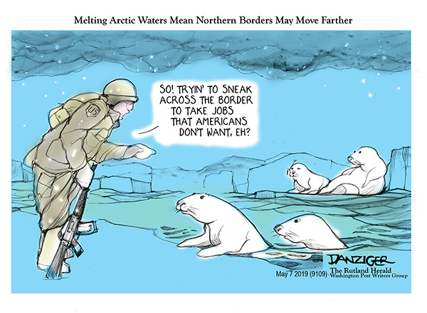
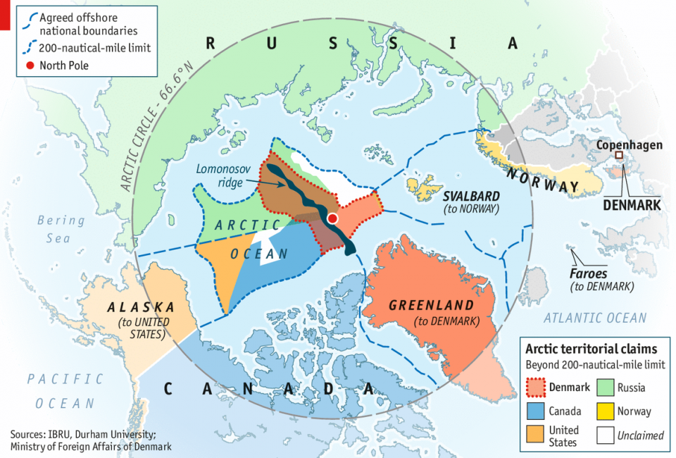
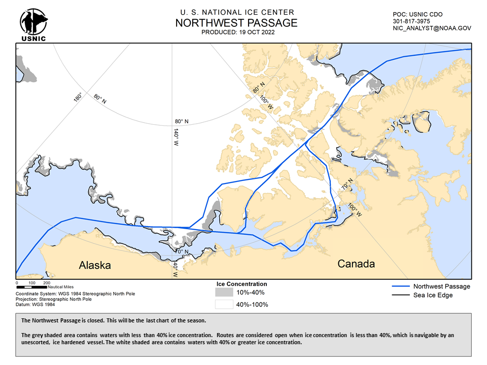
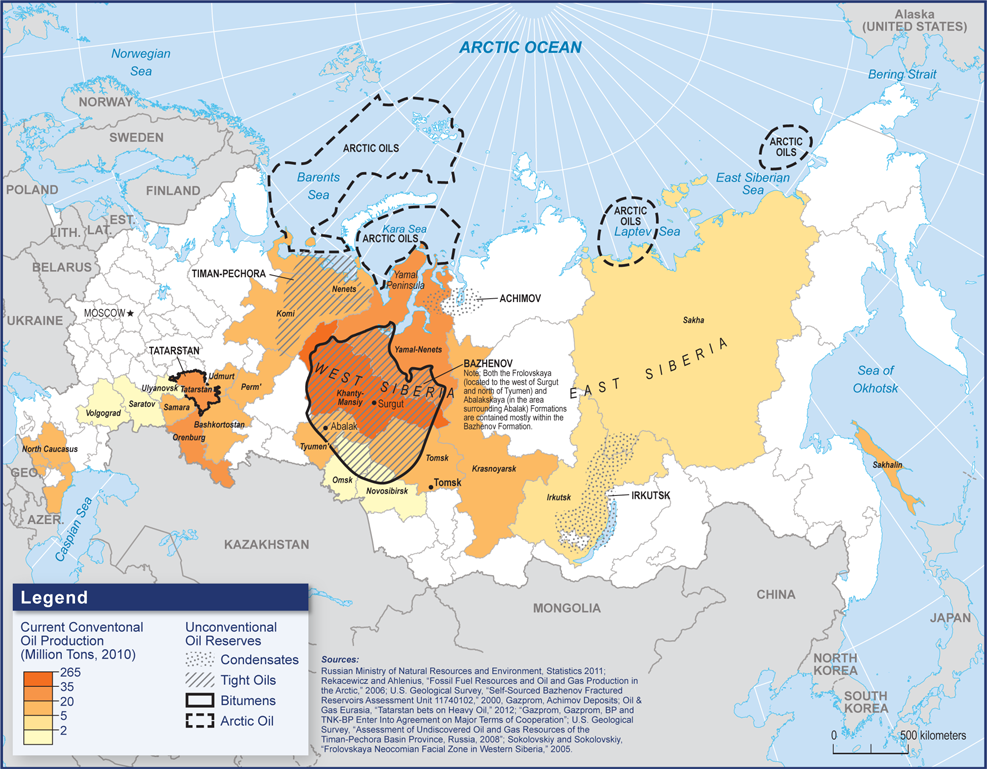
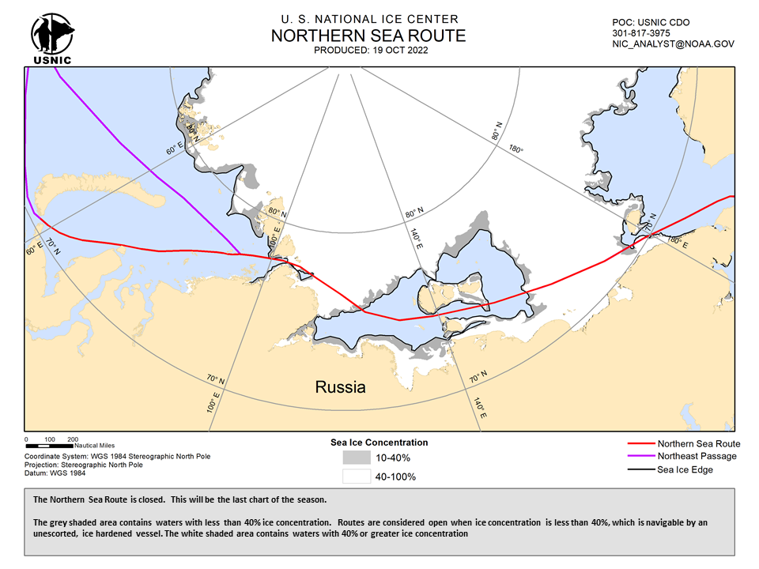
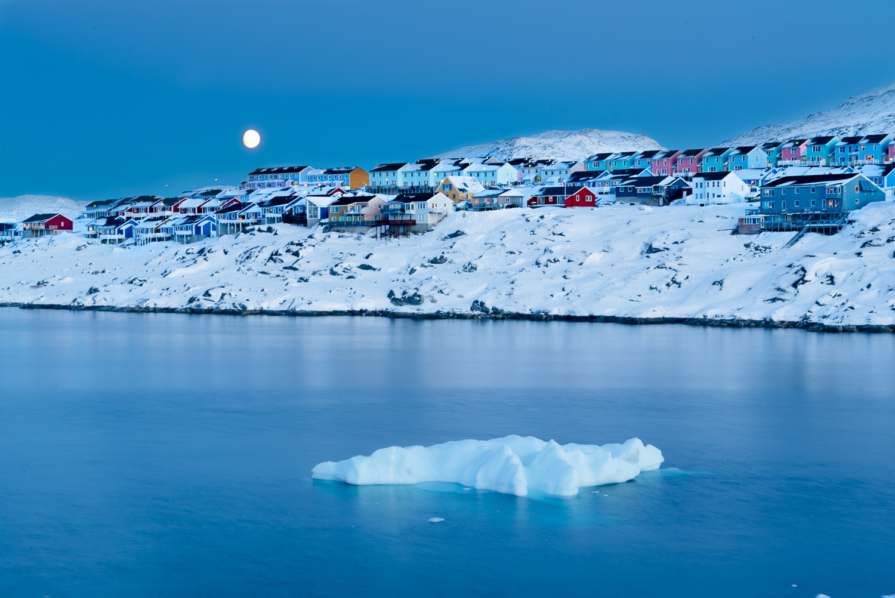

Hot Politics in a Cold World
Project by Maxim Johnson
Our climate has been dramatically warming ever since the age of industrialization. This rapid change of our environment is caused by our constant consumption and production of resources. Now as we have started to warm the planet, we turn to the Arctic circle, and its opening waters as ice melts. The Arctic circle does not have a set latitude as it shifts with the tilt of the Earth, but it is agreed that its latitude sits at about 66.5 degrees north. This area used to be reliably inundated with sea ice, but as temperatures continue to rise, this may no longer be the case.
 Source: DanzigerSome of the most important discussions around what to do in the Arctic have already begun, with many powerful Arctic stakeholders pushing to seize newly available gas, oil, fishing, and mineral resources. These stakeholders, such as Canada, the United States, and Russia, are shifting their priorities to these opening Arctic lands and ensuring that their national interests are met in the region. Through an exploration of the region we can identify who some of the biggest stakeholders are, what resources are considered the most valuable, where these resources are located, and why these geopolitical stakeholders are prioritizing these resources. This will hopefully offer some perspective into the issues which primarily affect this region.
Explore the Arctic Council - a cooperative forum of Arctic stakeholders: Arctic CouncilHow is the Arctic changing?
The Arctic’s sea ice area this year was about 10,600,000 square kilometers. The maximum area in 1982 sat at around 12,100,000 square kilometers, with a mean of 11,100,000 square kilometers over the forty-four years between 1979 to 2023. Overall Arctic sea ice area has been steadily decreasing, causing new areas to be exposed in the Arctic. Some noticeable examples include areas along Greenlands coasts which were previously covered by ice sheets or glaciers.
The total amount of sea ice returning each winter is decreasing as well, leaving less and less ice for the next season. Much of the older ice within the Arctic has disappeared, leaving younger and newly formed sea ice.
Source: NASA Earth SciencesEconomic Exclusivity Zones
According to the UN Convention on the Law of the Sea, every state is entitled to 200 nautical miles of territory surrounding their coastlines. This gives each state the power to exert control over these waters, effectively extending their countries territories. Any resources such as oil and gas, minerals, and even fishing are subject to the laws of the country under which waters jurisdiction you sail in. This 200 nautical mile zone from coastline to ocean is called the economic exclusivity zone or EEZ.
These zones work similar to country borders but are much more theoretical. Unlike terrestrial borders which often follow landforms or can be enforced militarily, EEZs have no borders except for the lines politicians draw. This of course has led to plenty of disputes with famous examples including the nine dash line declared by China in the South China Sea.
 Source: Map by Durham UniversityToday countries are using the rights of EEZs to enforce claims over resources which are now becoming available in the arctic. You can learn more about how EEZs look like currently in the Arctic, and where major disputes and claims are being held. Let's look at how claims on oil and gas, minerals, shipping, and fishing within the Arctic may be affected by melting sea ice.
For further information: Durham University, Encyclopedia BritannicaAmerica and the Arctic
The US Energy Information Administration had the following to say about the US’ primary Arctic territory and state, Alaska:
“Alaska's proved crude oil reserves—about 3.2 billion barrels at the beginning of 2022—are the fourth-largest in the nation. Alaska was among the top five oil-producing states for many years. The state moved up from sixth place in 2020 to fourth in 2021 and 2022, even though its annual oil production was the lowest in more than 45 years at 437,000 barrels per day.” Alaskan Energy Estimates
As the Arctic continues to warm, Alaska’s potential as a top oil exporter only increases. This is apparent as President Biden recently approved the Willow Project, a massive oil drilling venture being undertaken by ConocoPhillips. Taking place in the National Petroleum Reserve in Alaska, a federally owned area of land, the company hopes to make use of the estimated 600 million barrels of oil. President Biden has also announced limitations on oil prospecting into the Arctic and Beaufort seas, for now, as the US focuses its Arctic oil efforts on Alaskan soil.
For further information: NPR, CNNCanada and the Arctic
Compared to American oil interests Canada has put environmental protection first. In 2016 the Canadian government had placed a ban on new offshore oil and gas drilling licenses. The ban was extended indefinitely this year, showing the Canadian government's dedication to environmental protection. This ban comes through despite numerous surveys showing Canada possesses potentially massive amounts of oil and gas reserves. Nonetheless the Canadian government hopes to secure environmental interests, and look for industry in the Arctic through alternative means.
 Source: Map by USNICOne of these potential industries as sea ice melts is shipping. As it continues to warm in the Arctic the maximum extent of sea ice continues to shrink, with the sheet coming close to disappearing during the summer. This enables less specialized ships to pass through – more importantly cargo ships.This passage, known as the Northwest passage, cuts through the Arctic and could cut down drastically on global shipping times, thrusting Canada into a geopolitical spotlight similar to Panama’s canal or Egypt’s Suez canal. This would only be accomplished once the absence of sea ice is more reliable in the region, though this may be closer than many think.
For further information: CBC, Arctic InstituteRussia and the Arctic
Russia has become synonymous with the Arctic due to its extensive northern territories. These include areas such as Siberia which sit well into the Arctic oil. These areas are typically covered in snow, ice, and permafrost making any resource extraction extremely difficult in the region. This does not stop the Eurasian superpower from possessing some of the largest oil and gas extraction operations in the world. Siberia offers enormous amounts of oil and gas due to the West Siberian Petroleum Basin, the largest hydrocarbon basin in the world, which is estimated to hold over 140 billion barrels of oil and 1,300 trillion cubic feet of gas. This combined with the presence of other basins such as the Timan-Pechora basin makes Russia a top oil producer in the world. As arctic conditions warm, access to these regions will only improve.
 Source: Map by Carnegie EndowmentDespite this fact many countries have cut off trading and placed sanctions on Russia as soon as the Russo-Ukrainian War began. On top of these military and political pressure has been placed on Russia through NATO support of Ukraine. Many of Russia’s top oil consumers such as Germany sanctioned and limited consumption. This has only caused Russia to steadily limit access within the last year, placing many European countries in a tight spot. This has forced Russia to consider its place in the global market and shift its strategy as it hopes to survive amidst western sanctions. This has appeared in many different forms.
These pressures have resulted in Russia's interaction with the Arctic to be associated with a few main goals. As ice melts the Russians hope to secure the EEZ along its northern coast. There have even been attempts to extend it to the continental shelf, granting Russia even more territory. This is important as Russia also hopes to secure a reliable route through the arctic, also known as the northern sea route.
 Source: Map by USNICThis northern sea route would only improve Russia’s hold on arctic and global geopolitics. As mentioned before, Arctic routes offer shorter distances than going through the Suez or Panama canals. If Russia can establish an Arctic route through its EEZs, then they could enforce tolls and taxes, creating another point of income for the nation. These shipping routes would only increase its importance in global change, but could also strengthen its hold over Arctic resources as shipping has better access to the Arctic sea.
For further information: USGS, BBC, The EconomistGreenland and the Arctic
Unlike the other geopolitical actors we have looked at so far, Greenland does not hold a major global position. Only with melting Arctic ice is its importance on the global stage increasing. This is due to a few reasons but some of the most important reasons revolve around potential new resources. As Greenland’s ice sheets melt away, new potential industries are being uncovered. A few examples include sand for the cement industry, tourist destinations, new arctic fisheries, and minerals available under Greenland’s surface. Currently Greenland benefits from fishing and tourism, but resource extraction could dramatically increase its funds.
 Source: Picture of the DayAll of these new resources thrust the Danish territory into new conversations. Greenland possesses numerous rare earth minerals which are valuable in various industries such as automotive vehicles and renewable energy technology (such as wind turbines). This has caused major actors such as the US and China to improve their efforts and relations with Greenland, hoping to tap its potential.
This has caused concerns from the local indigenous population and reinvigorated movements of sovereignty for the Arctic territory. Many locals call for the need of regulation by Greenlandic people, as to protect against the degradation caused by greedy geopolitical actors. For many decades Greenland has experienced temperate normative ideals which have degraded its land, people, and culture. As Arctic ice continues to melt, this territory and its people will only increase in importance.
For further information: Deutsche Welle, NY TimesThe Future of Arctic Geopolitics
As one can see, the melting of Arctic Ice has numerous implications across the geopolitical landscape. Open water is creating opportunities in multiple industries such as oil and gas resources and shipping, with further implications appearing in mineral extraction. All of this is putting pressures on geopolitical claims to territories, as countries race to ensure access to the newly open waters. All of this is part of a greater complex global system where changes in our environment carry huge and numerous implications for how we move forward as a society. This should be apparent throughout this article as all of these geopolitical occurrences are because of one thing: climate change. It is important to understand these before moving forward.
 Source:
RCI
Source:
RCI
If you hope to continue being informed on current geopolitical issues then make sure to follow news sources such as CNN, BBC, and more. Click on the links throughout the article to gain further information on the occurrences within the Arctic. It is also important to acknowledge the many indigenous peoples throughout the Arctic as their voices are often silenced by the countries who ‘possess’ their territory.
Do more research into the Arctic and its Geopolitics: Foreign Policy